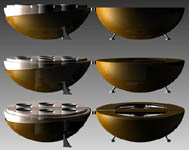

|
Stereolitografi
teknolojisinde kullanýlan fotopolimer
reçinelerin üreticisi DSM SOMOS firmasýnýn ProtoFunctional®
serisi reçinelerinin baþarýlý uygulamalarýný gösterebilmek
için düzenlediði uluslararasý yarýþmada Eskiþehir Anadolu
Üniv. Güzel sanatlar Fak. Ýç Mimarlýk Bölümü yüksek lisans
öðrencisi Özge
Kandemir "coffee bean / kahve çekirdeði"
isimli projesiyle öðrenci dalýnda birinci seçildi.
4 Aralýk'ta birinci seçilmesinin ardýndan, Özge Kandemir'in
3ds max yazýlýmý ile tasarladýðý bu ürünün bir prototipi stereolitografi
teknolojisi ile üretilerek Euromold 2002 fuarýnda sergilendi.
Kapandýðýnda "Kahve Çekirdeði" þeklinde olan bu
Türk Kahvesi piþirme cihazý, içinde farklý cins kahveler
içeren çeþitli saklama kaplarýndan ve seçilen kahvenin pratik
olarak piþirilmesini saðlayan bir ocaktan oluþuyor.
Özge Kandemir ödül olarak 5,000 Euro tutarýnda hýzlý prototip
imalat hizmetini ücretsiz almaya da hak kazandý.
Özge Kandemir'i kutlar, baþarýlarýnýn devamýný dileriz.
Aþaðýda
bu haberle ilgili iki web sitesi linki ve haberlerin orijinal
metni yer almaktadýr:
DSM
SOMOS
Student Winner of the VDID / DSM Somos industrial design
contest goes to Turkey
...
Creativity and functionality combined
Grand
prize winners of the VDID/DSM Somos ProtoFunctional® Design
Awards presented at EuroMold 2002
- 1st prize (5.000 euro certificate for RP services, registration
and accommodation for the VDID/DDV Congress 2003, 1 year honorary
membership of VDID/DDV) student category:
Ozge Kandemir (Turkey) for 'coffee bean', a new twist in transforming
Turkish coffee traditions into an experience which unites
the flavours and cultures of the world.
1
st prize (5.000 euro certificate for RP services,Congress
2003,1 year honorary membership of VDID/DDV)student category:
-Ms.Ozge Kandemir,Anadolu Universitesi Güzel (Turkey)
-Project:"coffee bean"
"coffee bean":a series of receptacles for different
flavoured beans and a stove for making the coffee, incorporated
into a single component that when closed takes on the appearance
of a coffee bean. Enriching the taste sensations for coffee
lovers,"coffee bean " suggests a new way of transforming Turkish
coffee traditions into an experience which unites the flavours
and cultures of the world. Ms.Ozge Kandemir 's inspirational
design, when closed, resembles the enticing characteristics
of a 'coffee bean' and consists, when opened, of two principle
functions.One half of 'coffee bean ' contains individual receptacles
designed to hold different bean flavours. Selected as desired
and, with the help of water and a small spirit lamp built
into the second half, transformed into an individual beverage.
The project demonstrates the greater communication opportunities
allowed by RP technologies in the presentation of innovative
designs. Advanced materials further lent to the presentation
a variety of functional characteristics that traditional communication
techniques would not have allowed.
Time
Compresssion Magazine
-
1st prize (5.000 euro certificate for RP services, registration
and accommodation for the VDID/DDV Congress 2003, 1 year honorary
membership of VDID/DDV) student category:
Ozge Kandemir (Turkey) for 'coffee bean', a new twist in transforming
Turkish coffee traditions into an experience which unites
the flavors and cultures of the world.
The
VDID/DSM Somos 2002 ProtoFunctional® Design competition accepted
entries from April to September 2002, open to both students
and professional designers competing in separate contest sessions,
with individual or group registration being allowed. At the
close of the contest, registrations came from the four corners
of the globe from Canada and the Americas to Europe, Middle
East and Asia.
Competition
entries were judged according to: unique application of free-form
technologies, visual interest, originality, functionality
and complexity of the design. The objects had to demonstrate
the advantage of layer additive technologies, while taking
into consideration the various benefits of presenting the
prototype in the preferred ProtoFunctional® material of DSM
Somos® for the specific application.
|